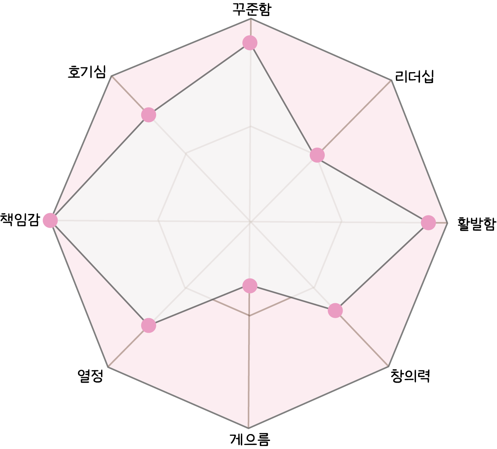

메인
about
- profile
- 오승민
- whiteosm@naver.com
- 서울시 강북구 거주
- Education
- 2023.08 그린컴퓨터아트학원 UI/UX반응형
웹디자인&웹퍼블리셔(코딩) 개발자 정규과정 수료 - 2019.02 세경대학 미술치료과 졸업
- 2017.02 용화여자고등학교 졸업
- License
- 2023.08 GTQ 1급
- 2020.10 전산회계 1급
- 2020.08 ITQ엑셀
- Skills
- html5
- CSS3
- JS&JQ
- PS
- IA
- Personality
- 